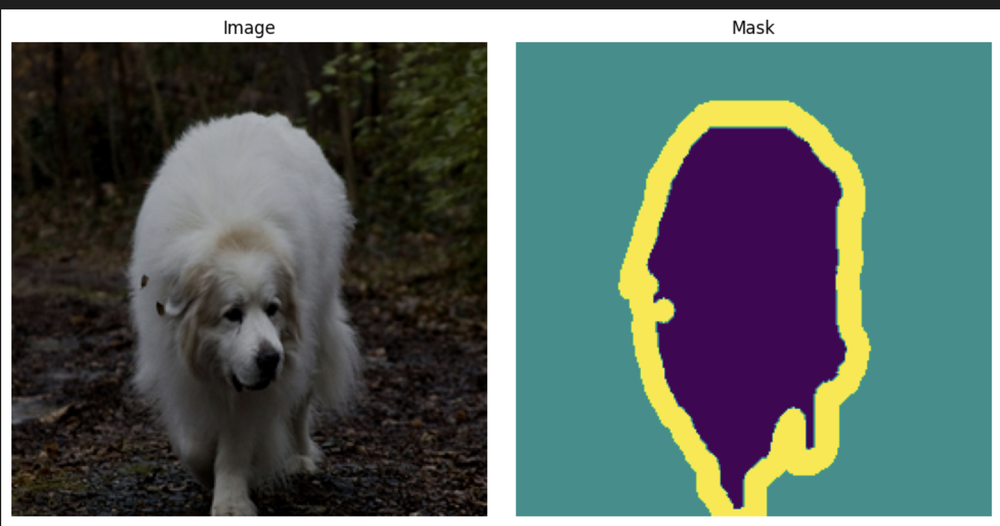
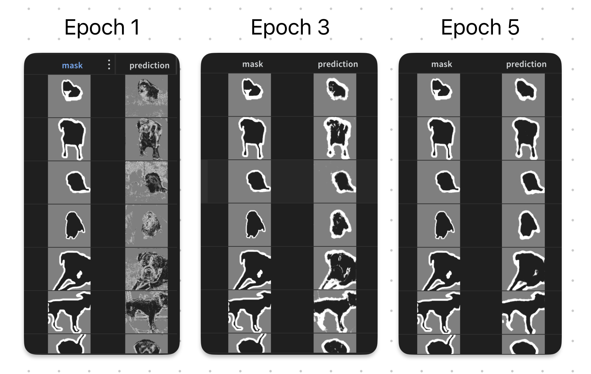

Image Segmentation with Deep Learning

Introduction
In this blog, we’ll explore the UNet architecture for image segmentation, discuss effective data augmentation strategies, and review loss functions tailored for segmentation tasks.
You can find the complete implementation on Kaggle and view the corresponding wandb run here.
The blog is structured into three main sections:
- Data preparation for segmentation tasks.
- Model architecture and input/output handling.
- Loss functions and training strategies for optimizing segmentation models.
Data
We will use the Trimap Segmentation Dataset for this blog. The dataset is a collection of images with corresponding trimap annotations. A trimap is a three-class segmentation map that indicates the foreground, background, and unknown regions of an image.
In this particular case, the trimap is used to segment images of cats and dogs into three classes.
As is the case with any image task, we use augmentation to increase the size of our dataset and improve the model’s generalization. Each input image contains a corresponding trimap annotation.
However, care must be taken to ensure that the augmentation applied to the input image is also applied to the trimap annotation. This is crucial for maintaining the integrity of the segmentation task. The following two functions within the Dataset class is used to transform the image and the mask.
def _apply_with_seed(
self, pil_img: Image.Image, transform: transforms.Compose, seed: int
) -> torch.Tensor:
"""Utility: set RNG seed, apply transform, reset not needed."""
if transform is None:
return pil_img
random_state = random.getstate()
torch_state = torch.random.get_rng_state()
random.seed(seed)
torch.manual_seed(seed)
out = transform(pil_img)
random.setstate(random_state)
torch.random.set_rng_state(torch_state)
return out
def __getitem__(self, idx: int) -> tuple[torch.Tensor, torch.Tensor]:
img = Image.open(self.image_paths[idx]).convert("RGB")
mask = transforms.functional.pil_to_tensor(
Image.open(self.mask_paths[idx]).convert("L")
) - 1 # 1-channel and the image itself is {1, 2, 3}. Convert to {0, 1, 2}
seed = torch.randint(0, 2**32, ()).item()
# 1) apply *shared* geometric transform
img = self._apply_with_seed(img, self.image_transform, seed)
mask = self._apply_with_seed(mask, self.mask_transform, seed)
return img, mask.long().squeeze()There are two key points to note here:
- The
_apply_with_seedfunction ensures that the same random seed is used for both the image and the mask transformations. This guarantees that any random transformations (like rotations, flips, etc.) are applied consistently to both the image and its corresponding mask. - The
_apply_with_seedfunction also resets the random state after applying the transformation. This is important to prevent unintended side effects on other parts of the code that rely on random number generation. For instance, dropout layers in neural networks use random number generation, and we want to ensure that their behavior is not affected by the transformations applied to the images and masks.

Model
Encoder
We will use the UNet architecture for this task. The UNet is a convolutional neural network architecture that is widely used for image segmentation tasks. It consists of an encoder-decoder structure with skip connections that help preserve spatial information. The following is a walkthrough of how it was constructed.
In terms of the base model, we leverage the Timm library to load up a preferred backbone. In this case, we use a MobileNetv4 architecture, but the methods are general enough to accommodate other backbones as well. In order to get the base encoder, we simply need to do the following:
encoder = timm.create_model(
model_name,
features_only=True,
out_indices=out_indices,
pretrained=pretrained,
)In this case, out_indicies are the layers from which we want to extract features. For MobileNetv4, we use [0, 1, 2, 3, 4] to get the feature maps at different resolutions. If we were to inspect the shapes of these feature maps, we would see the following:
>>> x = torch.randn(2, 3, 256, 256)
>>> features = encoder(x)
>>> [f.shape for f in features]
[torch.Size([2, 32, 128, 128]),
torch.Size([2, 48, 64, 64]),
torch.Size([2, 80, 32, 32]),
torch.Size([2, 160, 16, 16]),
torch.Size([2, 960, 8, 8])]It is worth reiterating that unlike a classification head, we get a list of feature maps at different resolutions. This is crucial for the UNet architecture, as we will be using these feature maps in the decoder part of the network. Also note that the above channels are specific to MobileNetv4. Other backbones will have different channel sizes. Luckily, Timm abstracts this away for us by providing us encoder.feature_info.channels().
Decoder - Upsampling
The first part of the mystery is how do we upsample the feature maps. Keep in mind that we need to get back to the original image size since we are doing pixel-wise classification segmentation. Taking this specific case of MobileNetv4, we start with a feature map of size [batch_size, 960, 8, 8] and need to get back to [batch_size, num_classes, 256, 256].
We need to increase the spatial dimensions. This is done by using a few UpBlocks shown below:
class UpBlock(nn.Module):
"""Upsample → concat skip → double conv."""
def __init__(self, in_ch: int, skip_ch: int, out_ch: int):
super().__init__()
self.up = nn.ConvTranspose2d(in_ch, out_ch, kernel_size=2, stride=2)
self.conv1 = ConvNormAct(out_ch + skip_ch, out_ch, kernel_size=3)
self.conv2 = ConvNormAct(out_ch, out_ch, kernel_size=3)
def forward(self, x: torch.Tensor, skip: torch.Tensor) -> torch.Tensor:
x = self.up(x)
# handle odd input sizes
if x.shape[-2:] != skip.shape[-2:]:
x = F.interpolate(x, size=skip.shape[-2:], mode="bilinear", align_corners=False)
x = torch.cat([x, skip], dim=1) # (B, in_ch + skip_ch, H, W)
x = self.conv1(x)
x = self.conv2(x)
return xIn the above code, the only component that upsamples the feature map is the ConvTranspose2d layer. Even here it is due to the kernel_size=2 and stride=2 parameters. This effectively doubles the spatial dimensions of the input feature map. ConvNormAct is simply a combination of Conv2d, BatchNorm2d, and ReLU activation and helps remove boxy artifacts that are common with transpose convolutions.
Decoder - Skip Connections
The final piece of the puzzle is the skip connections. The idea here is to concatenate the upsampled feature map with the corresponding feature map from the encoder. While it is true that you could simply upsample the feature map, similar to autoencoders, this helps preserve spatial information that might be lost during the downsampling process in the encoder.
In the following block (where we put everything together in the UNet class), this is the most important part describing the use of skip connections.
x = self.center(features[-1]) # start from deepest feature (C5)
for i, up in enumerate(self.up_blocks): # go C5→C4→…→C1
x = up(x, features[-(i + 2)])class UNet(nn.Module):
def __init__(
self,
encoder: nn.Module,
decoder_channels: list[int],
num_classes: int,
):
super().__init__()
self.encoder = encoder
enc_chs = self.encoder.feature_info.channels() # list of channel dimensions
# ----- Bridge (bottom of the “U”) -----------------------------------
self.center = nn.Sequential(
ConvNormAct(...)
)
# ----- Decoder ------------------------------------------------------
self.up_blocks = nn.ModuleList()
for i in range(
len(decoder_channels) - 1
): # four up-sampling steps (bring C5 → C1 resolution)
self.up_blocks.append(
UpBlock(decoder_channels[i], enc_chs[-(i + 2)], decoder_channels[i + 1])
)
# ----- Segmentation head & final resize -----------------------------
self.seg_head = nn.Sequential(
nn.ConvTranspose2d(...),
)
self.final_activation = Squasher()
def forward(self, x):
h, w = x.shape[-2:] # remember input size
features = self.encoder(x) # list eg.: [C1, C2, C3, C4, C5]
x = self.center(features[-1]) # start from deepest feature (C5)
for i, up in enumerate(self.up_blocks): # go C5→C4→…→C1
x = up(x, features[-(i + 2)])
# x shape: (B, decoder_channels[-1], H/2, W/2)
x = self.seg_head(x) # (B, num_classes, H, W)
if x.shape[-2:] != (h, w):
x = F.interpolate(x, size=(h, w), mode="bilinear", align_corners=False)
return self.final_activation(x) # (B, num_classes, H, W)Loss Functions
The Dice loss is a popular choice for image segmentation tasks, especially when dealing with imbalanced classes. It measures the overlap between the predicted segmentation and the ground truth. The Dice coefficient ranges from 0 to 1, where 1 indicates perfect overlap.
class DiceLoss(nn.Module):
def __init__(
self,
num_classes: int,
smooth: float = 1e-6,
):
super().__init__()
self.num_classes = num_classes
self.smooth = smooth
def forward(self, logits: torch.Tensor, targets: torch.Tensor) -> torch.Tensor:
"""
logits : (N, C, H, W) raw network outputs
targets : (N, H, W) int64 class indices in [0, C-1]
"""
# probabilities along channel dimension: (N, C, H, W)
probs = torch.softmax(logits, dim=1)
# one-hot targets: (N, C, H, W)
targets_1h = F.one_hot(targets, num_classes=self.num_classes).permute(0, 3, 1, 2).float()
# per-class Dice (vector length C)
dims = (0, 2, 3) # sum over batch & spatial dims
intersection = (probs * targets_1h).sum(dims)
union = probs.sum(dims) + targets_1h.sum(dims)
# import pdb; pdb.set_trace()
dice_per_class = 1 - (2 * intersection + self.smooth) / (union + self.smooth)
dice_loss = dice_per_class.mean()
return dice_lossLet’s break down the code step by step (in the forward method):
- Softmax Activation: The raw logits from the network are converted into probabilities using the softmax function. Note that the softmax is applied along the channel dimension (C), which represents the different classes.
- One-Hot Encoding: The ground truth targets, which are in the form of class indices, are converted into one-hot encoded format. The targets enter the function with shape
(N, H, W)and are transformed to(N, C, H, W)usingF.one_hotandpermute. - Intersection and Union Calculation: The intersection and union for each class are computed. The intersection is the element-wise multiplication of the predicted probabilities and the one-hot encoded targets, summed over the batch and spatial dimensions. The union is the sum of the predicted probabilities and the one-hot encoded targets, also summed over the batch and spatial dimensions. Intersection calculated the overlap between the predicted and ground truth masks, while union represents the total area covered by both masks.
- Dice Coefficient Calculation: Ignoring constants, the dice loss per class is the negative intersection over union. This is averaged to obtain the final Dice loss. Division by union ensures that the loss is normalized, preventing bias towards larger classes. i.e. Dice loss is less affected by class imbalance caused by background pixels.
During training we combine the Dice loss with the standard Cross-Entropy loss to leverage the strengths of both.
Training
Given that we are using a pre-trained backbone, we can use a smaller learning rate for the encoder and a larger learning rate for the decoder and segmentation head. This is because the encoder has already learned useful features from a large dataset, while the decoder and segmentation head need to learn from scratch. We can achieve this by using different parameter groups in the optimizer. Here is an example of how to set this up using the Adam optimizer. I have always found that using a learning rate scheduler helps with convergence. In this case, we use the OneCycleLR scheduler.
encoder_params = self.model.encoder.parameters()
decoder_params = (
list(self.model.center.parameters())
+ list(self.model.up_blocks.parameters())
+ list(self.model.seg_head.parameters())
)
optimizer = torch.optim.Adam(
[
{"params": encoder_params, "lr": self.learning_rate / 10},
{"params": decoder_params, "lr": self.learning_rate},
]
)
scheduler = torch.optim.lr_scheduler.OneCycleLR(
optimizer,
max_lr=[self.learning_rate / 10, self.learning_rate],
total_steps=self.trainer.estimated_stepping_batches,
)It is quite important to monitor and log visual examples. Given that it is generally expensive to log images, I log a single batch every epoch as opposed to logging every batch. This is achieved in pytorch lightning as follows:
def common_step(
self, x: tuple[torch.Tensor, torch.Tensor], prefix: str, batch_idx: int
) -> torch.Tensor:
image, mask = x
out = self.model(image)
dice_loss = self.dice_loss(out, mask)
loss = dice_loss + self.ce_loss(out, mask)
self.log(f"{prefix}_dice_loss", dice_loss, on_step=False, on_epoch=True)
self.log(f"{prefix}_loss", loss, on_step=False, on_epoch=True)
if prefix == "valid" and batch_idx == 0:
table = wandb.Table(columns=["image", "mask", "prediction"])
preds = out.argmax(dim=1, keepdims=True)
for i in range(len(image)):
# Undo your dataset-level normalization / resizing, etc.
img_vis = self.inverse_transform(image[i])
mask_pil = transforms.functional.to_pil_image(mask[i] / 2)
pred_pil = transforms.functional.to_pil_image(preds[i] / 2)
# Add one row per sample
table.add_data(wandb.Image(img_vis), wandb.Image(mask_pil), wandb.Image(pred_pil))
wandb.log({f"{prefix}_epoch_{self.current_epoch}": table})Results
As shown in the following figure, the model is able to learn to segment the images quite well. However, in the first few epochs, you can see the edge artifacts appearing as probabilities in the predicted mask. This is due to the UNet architecure and the use of skip connections. However, as training progresses, the model learns to refine its predictions and the artifacts disappear.

Conclusion
To summarise, in this blog we walked through: 1. Data preparation and augmentation techniques for image segmentation. 2. The UNet architecture, including the encoder, decoder, and skip connections. 3. Loss functions suitable for image segmentation tasks, specifically the Dice loss combined with Cross-Entropy loss. 4. Training strategies, including differential learning rates for pre-trained and newly initialized layers, and the use of learning rate schedulers to enhance convergence.
If you have any questions or suggestions, please feel free to reach out to me on LinkedIn. You can also find the full code on Kaggle. Please upvote if you find it useful. The corresponding wandb run can be found here.
Appendix
Squasher Activation
The following activation function is similar to a leaky ReLU, but it squashes the output after x=1 as well. This is useful for segmentation tasks where the output needs to be in the range [0, 1] for each class. Rather than using a hard cutoff, this activation function allows for a small gradient to flow even outside the [0, 1] range, which can help with training stability.
class Squasher(nn.Module):
"""Piece-wise-linear ‘squash’:
x for 0 ≤ x ≤ 1
alpha·x for x < 0
1 + alpha(x–1) for x > 1
"""
def __init__(self, alpha: float = 0.01):
super().__init__()
self.alpha = alpha
def forward(self, x: torch.Tensor) -> torch.Tensor:
clamped = x.clamp(0.0, 1.0)
return clamped + self.alpha * (x - clamped)Inverse Transform
If we know the mean and standard deviation used to normalize the images, we can easily invert the normalization. This is useful for visualizing the images after they have been processed by the model. In the following function, we extract the mean and standard deviation from the (usually) last Normalize transform in a transforms.Compose object and create a new Normalize transform that inverts the normalization.
def get_inverse_transform(
transform: transforms.Compose,
) -> transforms.Normalize:
# Extract mean and std from the last Normalize transform
for t in reversed(transform.transforms):
if isinstance(t, transforms.Normalize):
return transforms.Normalize(
mean=-t.mean / t.std,
std=1.0 / t.std,
)